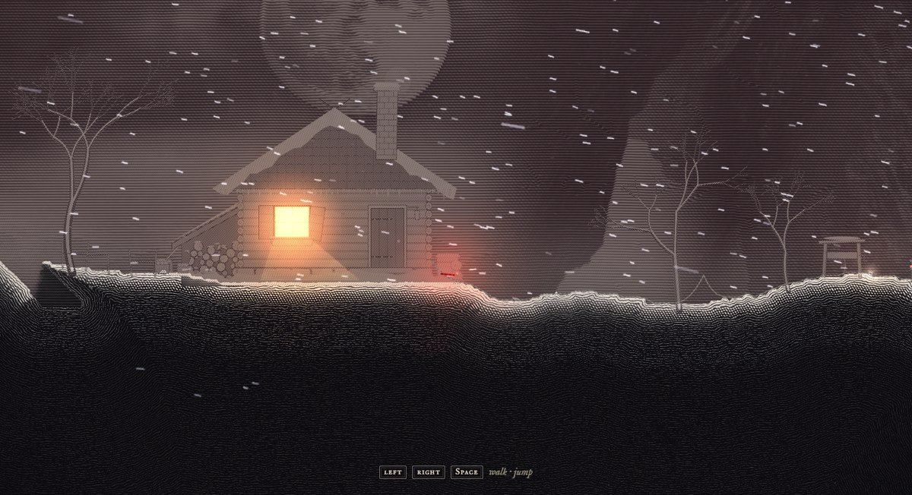
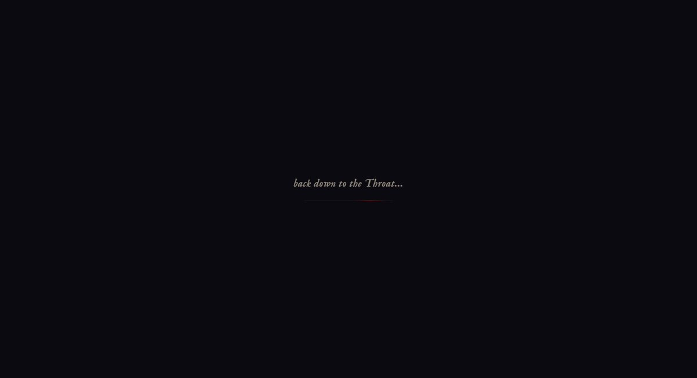
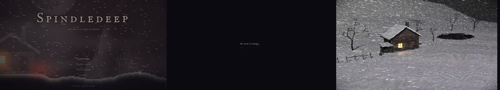
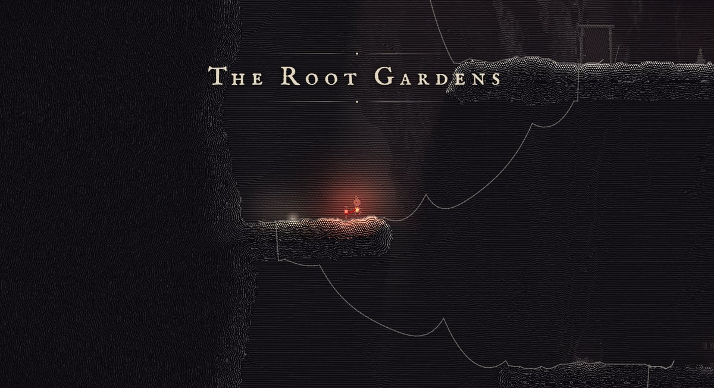
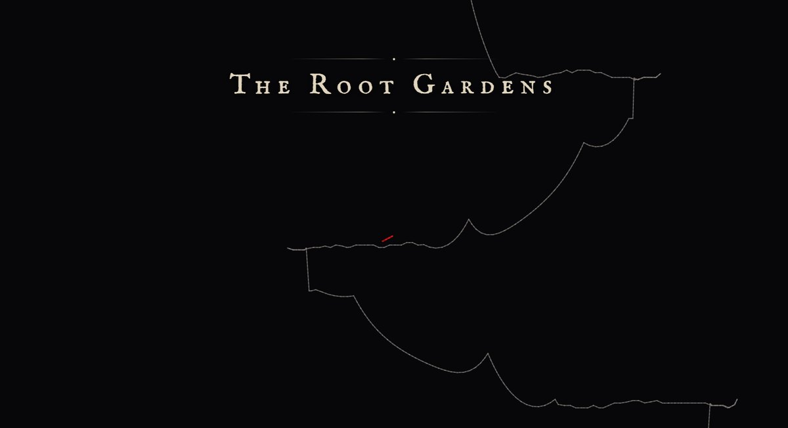
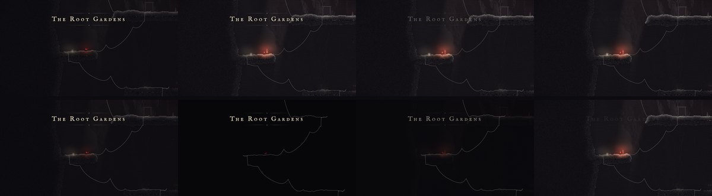
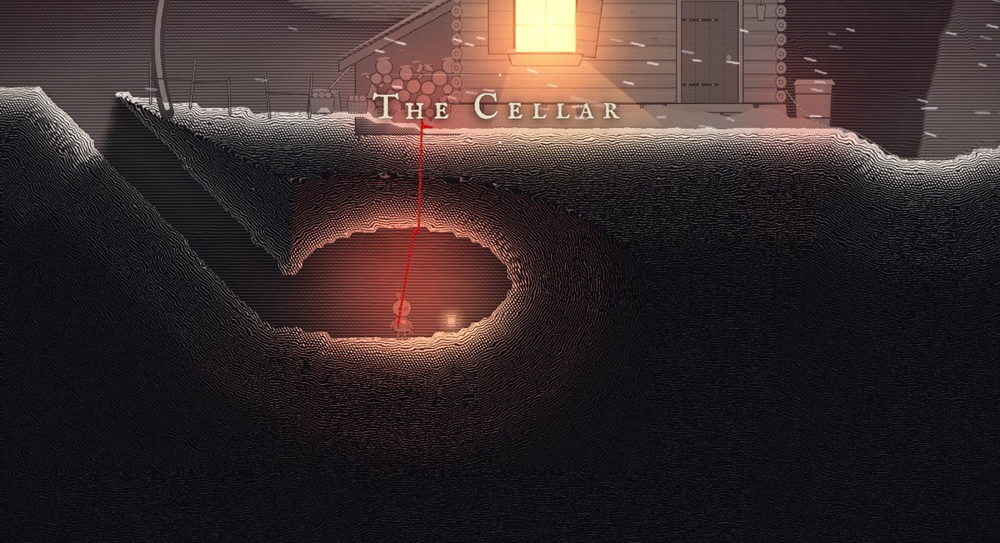
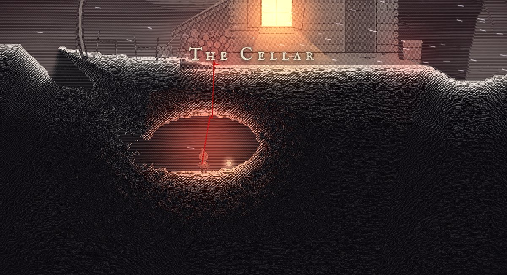
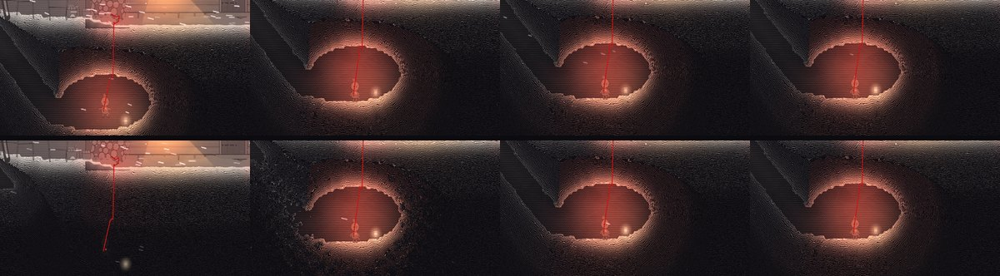

Every screen goes through the darkand comes back out of it
I went through every point where the game changes screen or jumps, and found twelve. All twelve now ease. Changes of screen go out to black, with a short loading line and a running red thread while anything loads. Moments inside the game (dying, pausing, finding a room, a hint changing) fade, slow or crumble instead of popping.
Add smooth transitions and loading screens between all the screens and moments of the game. There should be not a single hard stitch which would pop into eyes. It should all be smooth and well-polished.
| Moment | Before | Now |
|---|---|---|
| Title → Continue | the world swapped under the fading title; the camera jumped from the title view to your peg and the zoom drifted after it | out to black with sound; back down to the Throat… (your area) with the thread running; the camera, zoom and light are already in place when it fades back in |
| Title → Begin → prologue | the film faded in over the title menu | out to black; the snow is coming… while the film loads; the black lifts once the film is actually playing |
| Skipping a film | the picture faded, but its sound played on, then stopped dead | the film's sound runs down over 0.7 s as the picture goes to black |
| Ending → epilogue film → credits | the film faded in over the game in under a second; between film and credits the world showed through for a moment | a slow 2.4 s fade to black into the film; the credits are already there under the film's last black frame |
| Pause and resume | the world froze mid-frame; the sound cut dead | time runs down to a stop in about 0.2 s and picks up again the same way; the sound breathes out before the audio stops, and back in |
| Return to the cottage | hard cut to the title | through black with back up to the cottage… |
| After the second ending → title | hard cut | a long fade through black |
| Leave | the window just closed | picture and sound fade to black, then it closes |
| Death → respawn | dimmed to 85 %, then popped back at full brightness at the peg, with the camera swooping over | goes fully to black; she is back at the peg, camera and light already set, and the picture fades up over a second |
| Finding a hidden room | the rock vanished in one frame | it crumbles away from where she stands over about 1.5 s, with a low rumble and dust |
| Hints, prompts, notes, area names changing | new text replaced the old while it was on screen | the old text fades out, swaps, and fades back in |
| Fullscreen on/off | the layout jumped as the window resized | a short blink through black hides the resize |


BeforeAfterDrag the thread to compare
Half a second after choosing Continue. The line names the area your save is in. It holds for at least 1.6 s so it can be read, then the game fades in with its sound. The same passage, with its own line, is used for Begin and for returning to the cottage.



BeforeAfterDrag the thread to compare

Before, the screen only dimmed, so you saw her vanish and the camera swing over to the peg. Now the screen is black by the time she respawns. The camera, zoom and light jump to the peg while it's dark, and the picture fades up with her already standing there.


BeforeAfterDrag the thread to compare

The game draws a found room by swapping its walls from "rock" to "open". Now it blends between the two over 1.5 s. The blend starts where she is and spreads outward, with a little noise so the edge breaks up like falling earth. A low rumble and a puff of dust go with it, and the room's name fades in over the area name instead of replacing it.
Everything ran in the hidden test window through the real menus. Begin, skip, pause, resume, Return to the cottage and Leave were clicked as a player would. The tie ending was played through the epilogue film to the credits. At each step the test logged whether the screen was black, the caption, the game's sound level and whether the audio was running:
One fix came out of the checks: the loading line first appeared over the title while the title was still fading out. It now comes up only once the screen is black. Fullscreen wasn't tried in the test window, because it would make the hidden window visible on your screen; it uses the same passage.
app/src/main.jspassage(), veil() and setText(); every screen change goes through them. Also: the pause time-ease, the respawn fade with camSnap, startReveal/revealStep, the film skip and the credits under the epilogue.app/src/terrain.jsrevealPair(): the room's walls before and after, for the blend.app/index.html · app/style.cssThe #veil with its caption and running thread; .swapping for text changes.